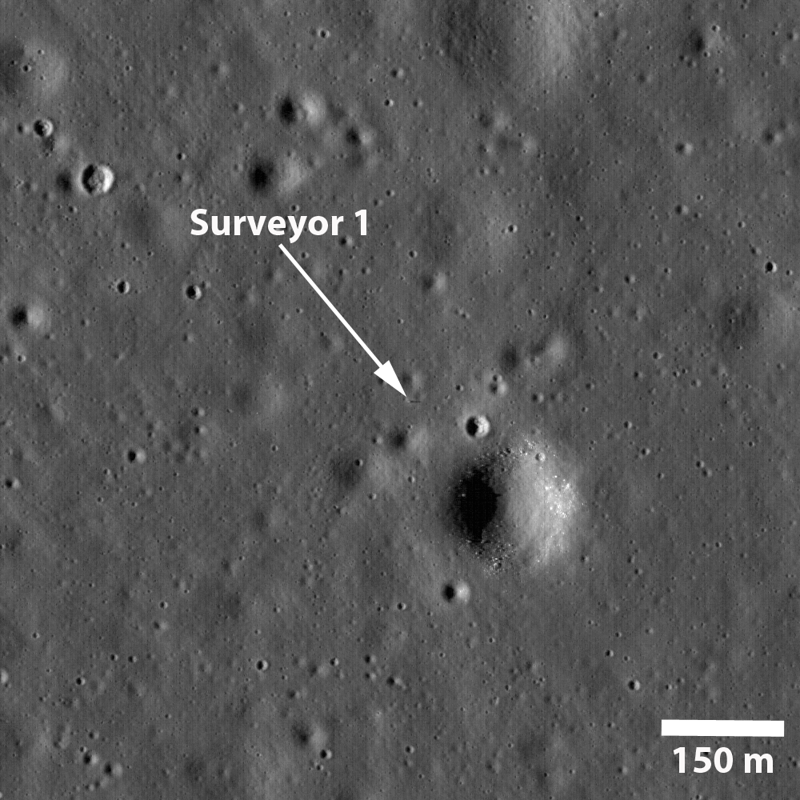
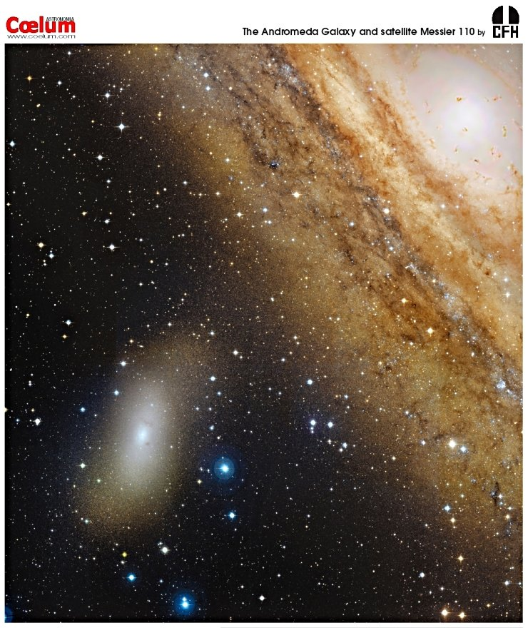
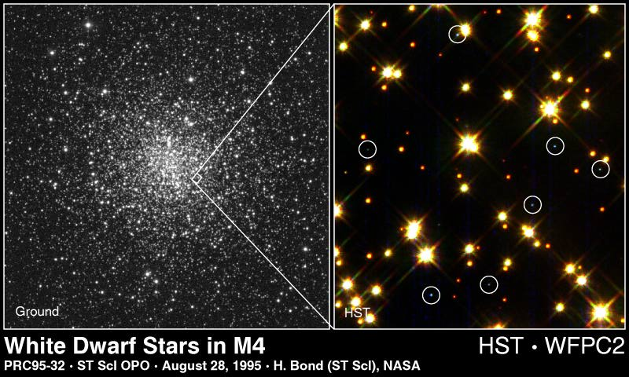

Date: 2016-06-04
Author: Not listed

Fifty years ago, Surveyor 1 reached the Moon. Launched on May 30, 1966 and landed on June 2, 1966 with the Moon at full phase it became the first US spacecraft to make a soft landing on another world. The first of seven Surveyor missions intended to test the lunar terrain for the planned Apollo landings it sent back over 10,000 images before lunar nightfall on June 14. The total rose to over 11,000 images returned before its second lunar night began on July 13. Surveyor 1 continued to respond from the lunar surface until January 7, 1967. Captured in this 2009 image from the Lunar Reconnaissance Orbiter, the first Surveyor still stands at its landing site, a speck in the Oceanus Procellarum (the Ocean of Storms). With the Sun low on the western horizon the lonely, 3.3 meter tall spacecraft casts a shadow almost 15 meters long in the late lunar afternoon.
Date: 2008-09-09
Author: Jean-Charles Cuillandre

Our Milky Way Galaxy is not alone. It is part of a gathering of about 25 galaxies known as the Local Group. Members include the Great Andromeda Galaxy (M31), M32, M33, the Large Magellanic Cloud, the Small Magellanic Cloud, Dwingeloo 1, several small irregular galaxies, and many dwarf elliptical and dwarf spheroidal galaxies. Pictured on the lower right is one of the dwarf ellipticals: NGC 205. Like M32, NGC 205 is a companion to the large M31, and can sometimes be seen to the south of M31's center in photographs. The image shows NGC 205 to be unusual for an elliptical galaxy in that it contains at least two dust clouds (at 9 and 2 o'clock - they are visible but hard to spot) and signs of recent star formation. This galaxy is sometimes known as M110, although it was actually not part of Messier's original catalog.
Date: 2000-09-10
Author: Not listed

Diminutive by stellar standards, white dwarf stars are also intensely hot ... but they are cooling. No longer do their interior nuclear fires burn, so they will continue to cool until they fade away. This Hubble Space Telescope image covers a small region near the center of a globular cluster known as M4. Here, researchers have discovered a large concentration of white dwarf stars (circled above). This was expected - low mass stars, including the Sun, are believed to evolve to the white dwarf stage. Studying how these stars cool could lead to a better understanding of their ages, of the age of their parent globular cluster, and even the age of our universe.